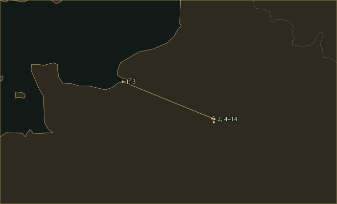

ErikSatie
Composer of the <i>Gymnopédies</i>, who asked pianists to prepare for 840 repetitions with ‘serious immobilities’.
- Training
- Paris Conservatoire; returned to study at the Schola Cantorum in 1905, aged thirty-nine
- Home
- Honfleur, then Montmartre; a room in Arcueil from 1898 until his death
- Stage partners
- Cocteau, Picasso and Massine for Parade; Picabia and René Clair for Relâche
- On the page
- Piano miniatures, songs, ballets, Socrate and the comic Memoirs of an Amnesiac
Life
In April 1912 Erik Satie told the readers of the Revue musicale S.I.M. that he preferred measuring sounds to hearing them. He reported the results of his equipment. A B♭ examined through a phonoscope was so repulsive that he called his servant to look at it; an ordinary F♯, emitted by a large tenor, weighed ninety-three kilograms. “I get more pleasure from measuring a sound than from hearing it,” he wrote. The essay belonged to his Memoirs of an Amnesiac.
He was born in Honfleur in 1866, the son of a French shipping broker and an English mother of Scottish descent. After she died in 1872, he and his brother returned from Paris to their paternal grandparents in Normandy. A local organist, Gustave Vinot, taught him music and introduced him to plainchant. Back in Paris, Satie entered the Conservatoire in 1879. Two periods of study there produced poor reports and no diploma.
MontmartreChat Noir, Péladan and Valadon
In 1887 he moved out of his father’s home and began frequenting the Chat Noir cabaret. He became one of its pianists and earned his living there among singers, poets and shadow plays. He wrote the Sarabandes in 1887 and the Gymnopédies in 1888. In the First Gymnopédie, a bass note falls on the first beat and a soft chord follows on the second. The harmony alternates between G major seventh and D major seventh before the melody enters.
At the Auberge du Clou, where he later played, he became friends with Debussy and met Joséphin Péladan, self-appointed leader of a Rosicrucian order. Satie wrote ceremonial music for Péladan and music for his play Le Fils des étoiles. After breaking with him, he founded the Metropolitan Church of Art of Jesus the Conductor, which had one member. From his small room in the rue Cortot he issued denunciations of his enemies in the name of this church.
The painter Suzanne Valadon met him in Montmartre. Their affair began in January 1893; she painted him, and he drew her on music paper. Her portrait shows him with long hair, a reddish beard and pale eyes behind his glasses. After their separation that year he wrote to his brother Conrad: “Time will do what I cannot do at present.”
Vexations puts a short, chromatic bass through two harmonisations. It stayed unpublished during Satie’s lifetime. In September 1963, John Cage organised a team of pianists at New York’s Pocket Theatre to play the full 840 repetitions. They took eighteen hours and forty minutes. The unusual spellings of the notes make the short phrase awkward to read, and they remain awkward after repeated playing.
ArcueilCabaret work and the Schola Cantorum
Satie moved south of Paris to Arcueil in 1898, where he took a cheap room and walked to his work in the city. He accompanied cabaret performers and wrote songs of his own, including the waltz Je te veux. Between 1898 and 1908 he supplied music for some thirty of Vincent Hyspa’s topical songs, which made use of quotation for comic effect. He also reused his own music. The Trois morceaux en forme de poire of 1903 gathers earlier material into seven sections.
In 1905, aged thirty-nine, he enrolled at the Schola Cantorum to study counterpoint with Albert Roussel. This time he worked hard, earned a diploma in 1908 and continued studying. In January 1911 Ravel played some of his early pieces at a Société musicale indépendante concert, and Debussy’s orchestrations of two Gymnopédies also drew attention to his work. Publishers then asked him for new music.
His imaginary working day was equally exact. In the February 1913 instalment of the Memoirs of an Amnesiac, he rose at 7.18 and was inspired between 10.23 and 11.47. “I breathe carefully (a little at a time),” he added. The man who wrote these comic inventions took great care over the lettering and layout of his manuscripts.
Satie’s piano music of 1912–15 contains many parodies and misattributions. In Embryons desséchés he quoted the funeral march from Chopin’s Second Sonata and labelled it a “famous mazurka by Schubert”. The last piece ends with a long series of repeated F major cadences. Above the final passage he wrote “Obligatory cadence (by the composer)”.
Sports et divertissements, composed in 1914, sets twenty miniature scenes beside drawings by Charles Martin. Satie’s words and notes are reproduced in his own hand. Tennis, fishing and a tango each take up a few lines. Satie dedicated the prefatory Choral inappétissant “to those who do not like me”. Because of the war, publication was delayed until 1923, and by then Martin had made new illustrations to suit the new fashions.
1917–20Parade and Socrate
Parade brought him to Diaghilev’s Ballets Russes in 1917. Jean Cocteau devised a show about performers trying to lure customers into another show; Picasso supplied the designs and Léonide Massine the choreography. A Chinese conjuror, acrobats and an American girl present their acts. The score includes ragtime, sirens and a typewriter, and its short tunes repeat through the noise of the machine. The audience received the new ballet badly.
Meanwhile Winnaretta Singer, Princesse de Polignac, had commissioned Socrate. Satie chose passages from Plato in Victor Cousin’s French translation, comprising a portrait of the philosopher, a conversation beside the Ilissus and the account of his death. Women’s voices tell the story over quiet, recurring figures. In April 1918 Jane Bathori sang extracts with Satie at the piano in the princess’s salon. At the end of the work the accompaniment keeps to the same measured movement as the poison takes effect.
On 8 March 1920, at the Galerie Barbazanges, he and Darius Milhaud tried out a different arrangement between music and its audience. During the intervals of a Max Jacob play, musicians placed around the room repeated simple refrains, and a notice asked the public to take no notice of them. This was musique d’ameublement, furniture music, intended to be heard while people talked and moved about.
1924–25Relâche, Entr’acte and death
In 1924 he collaborated with Francis Picabia on Relâche for the Ballets Suédois. René Clair’s film Entr’acte was part of the entertainment. In the film Satie and Picabia appear on a rooftop with a cannon, and a funeral procession turns into a chase. Satie wrote the music for the film and built it from repeated sections, which made it easier to keep the music in step with the projector.
He died of cirrhosis at the Hôpital Saint-Joseph in Paris on 1 July 1925. Friends then entered the room in Arcueil where he had admitted no visitors. Among the accumulated papers they found scores that had been thought lost.
Places

All 14 places, with sources
- Honfleur · 1866-05-17 · born
Born in the Norman port to Alfred Satie and Jane Leslie Anton.
- Paris · 1870–1872 · childhood
Lived with his parents before his mother’s death.
- Honfleur · 1872–1878 · childhood
Lived with his grandparents and learned music from a local organist.
- Paris · 1879–1882 · studied
First period of piano study at the Conservatoire.
- Paris · 1885–1886 · studied
Returned to the Conservatoire before entering military service.
- Montmartre Paris · 1887–1898 · worked
Played in cabarets including the Chat Noir and Auberge du Clou. Gymnopédies; Gnossiennes.
- Paris · 1892 · worked
Provided music for Péladan’s Rosicrucian events. Le Fils des étoiles.
- Arcueil · 1898–1925 · lived
Lived in a small room at 22 rue Cauchy.
- Paris · 1905–1912 · studied
Studied counterpoint and composition at the Schola Cantorum.
- Théâtre du Châtelet Paris · 1917-05-18 · premiere
The Ballets Russes introduced Parade, with designs by Picasso. Parade.
- Paris · 1920 · premiere
The orchestral Socrate reached the concert hall. Socrate.
- Théâtre des Champs-Élysées Paris · 1924-12-04 · premiere
Relâche premiered with René Clair’s film Entr’acte. Relâche; Entr’acte.
- Arcueil · 1925 · buried
Buried in the municipal cemetery.
- Paris · 1925-07-01 · died
Died at the Hôpital Saint-Joseph.
Influences
Teachers, encounters and borrowed music, each with its account and sources in the Web of Influence.
Influences received
The Sound
♮Harmony
The First Gymnopédie opens with G major seventh followed by D major seventh. F♯ belongs to both chords, so one note is held while the bass moves. Each chord is sustained long enough to be heard on its own, and the tune enters above the pattern only after the pattern has been established.
𝄆Repetition
In Vexations, the same bass line is played alone and then with two different sets of chords. The manuscript asks for 840 repetitions. In the film music for Entr’acte, repeated blocks keep the orchestra playing until the next visual cue.
𝄾Words on the page
A direction in the Gnossiennes reads “Open your head”. It gives the pianist no tempo or metronome marking. In Sports et divertissements the calligraphy is part of the work and shares the page with small scenes and jokes. The notes are precisely placed. The player has to decide whether, and how, a direction written as an absurd sentence should affect touch.
𝄋Quotation & endings
Embryons desséchés quotes Chopin’s funeral march and labels it Schubert. At the end of the set, a series of loud F major cadences repeats the close of the piece several times over.
𝄞Voice
Socrate gives Plato’s prose to women’s voices, often setting a syllable to each note. The accompaniment repeats small figures while the singer describes a walk, a conversation or the drinking of hemlock. Satie keeps the narrative moving through its most painful sentences.
Works
A selection from the composer’s works.
- 1887Trois SarabandesPianoSlow dances in dense chords built on sevenths and ninths. Ravel included the Second Sarabande in his January 1911 concert of Satie’s early music.
- 1888Trois GymnopédiesPianoEach of the three pieces is built from a low bass note followed by a chord, with room left for the melody. Debussy orchestrated the first and third.Recordings in the Hall
- c. 1890Trois GnossiennesPianoThe first published group has no bar lines and gives the pianist unusual verbal instructions. Three further pieces were added to the familiar set after Satie’s death.
- 1893VexationsKeyboardA chromatic bass with two harmonisations, and a preface in the manuscript that refers to 840 repetitions. Cage’s 1963 performance in New York took a team of pianists eighteen hours and forty minutes.
- 1913Embryons desséchésPianoThree pieces named after small marine creatures, with a funeral-march parody in the middle. The final cadence, in F major, is drawn out far beyond its usual length.
- 1914Sports et divertissementsPiano, with written texts and drawings by Charles MartinTwenty scenes and an opening chorale, with Satie’s words and music reproduced in his own calligraphy. The illustrated album finally appeared in 1923.
- 1916–17ParadeOrchestra with additional noise-making instruments; balletA circus-style invitation to a show whose customers never go inside. Picasso made the designs and Massine the choreography; Satie’s score uses ragtime, repeated tunes and mechanical noises.
- 1917–18SocrateFemale voices and chamber orchestra; version with pianoPlato in Victor Cousin’s French translation, set in three scenes ending with the philosopher’s death. Short accompanying figures repeat beneath the narration, which moves at an even pace.
- 1924Relâche, with Cinéma for Entr’acteOrchestra; ballet and filmPicabia’s ballet included René Clair’s film, in which Satie himself appears with a cannon. The film score gives the conductor repeatable passages to fit the projected action.
In the Score
Short examples, engraved and playable.
Gymnopédie No. 1 — accompaniment reductionG major seventh, then D major seventh
Repeated blocks — schematicDuration without crescendo
Sister Arts

Valadon and Satie met at the Auberge du Clou and became lovers in January 1893. While she painted this portrait, one of her earliest oils, he drew her on music paper. She painted him with pale eyes behind his glasses and a carefully coloured mouth, before the bowler hat became his public image.

Satie admired Puvis, whose colours are pale and whose gestures are spare. Here a fisherman must support his two children in a nearly empty landscape. The picture can be compared with Socrate.
Recommended recordings
- Gymnopédies · Gnossiennes and other piano worksPascal RogéDeccaA mobile, lightly ironic Satie. In the Gymnopédies some suggestion of dance remains, and the Gnossiennes move forward. A recording to start with for a listener to whom the music has begun to sound too much like a solemn ritual.
- Early piano worksReinbert de LeeuwPhilips / DeccaAt the other extreme, de Leeuw took very slow tempos, leaving time for each chord to fade into the room. The Ogives are played at this pace too.
- SocrateBarbara Hannigan, Reinbert de LeeuwWinter & WinterHannigan uses vibrato only at chosen moments and keeps the French words unusually close and clear. De Leeuw balances the piano carefully, so that one singer carries the whole work.
Lineage
Roussel taught him counterpoint; Debussy orchestrated two Gymnopédies; Ravel played the early pieces in public. Milhaud helped with furniture music and remained a friend. Poulenc kept returning to Satie’s example, even after their quarrel. In 1963 Cage presented Vexations, until then a private manuscript, in concert.
Further reading
- Robert Orledge, Satie the Composer (Cambridge University Press, 1990).study
A book-length study of Satie’s work, not limited to the familiar piano pieces.
- Caroline Potter, Erik Satie: A Parisian Composer and His World (Boydell Press, 2016).study
Chapters treat mechanical music, texted piano works, repetition, furniture music, politics and Dada.
- Mary E. Davis, Erik Satie (2007).biography
A concise biography. The catalogue record identifies the author and work.
Cite this page
Contrapunctus. “Erik Satie.” Accessed 19 October 2026. https://mottopanikeiku.github.io/contrapunctus/composers/satie.html.
@misc{contrapunctus-composers-satie,
author = {{Contrapunctus}},
title = {Erik Satie},
howpublished = {\url{https://mottopanikeiku.github.io/contrapunctus/composers/satie.html}},
note = {Accessed 2026-10-19}
}